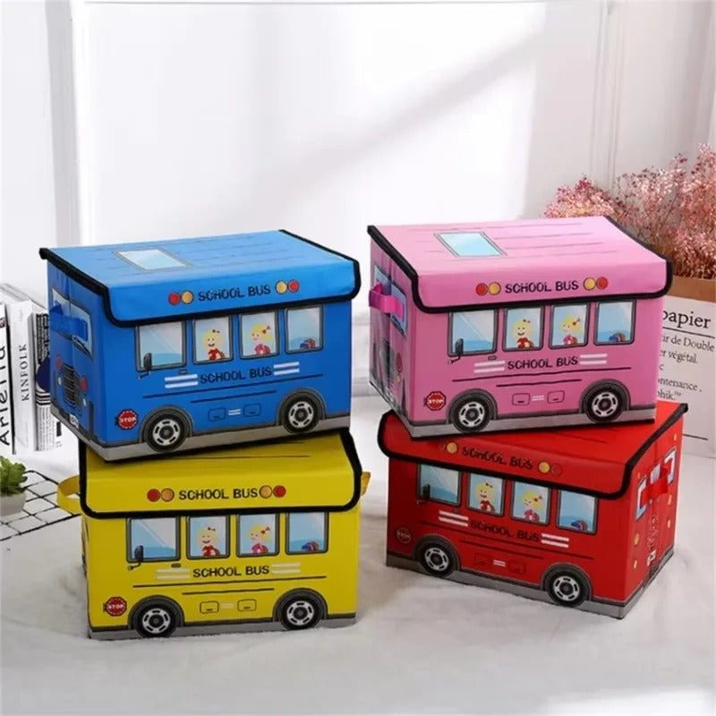
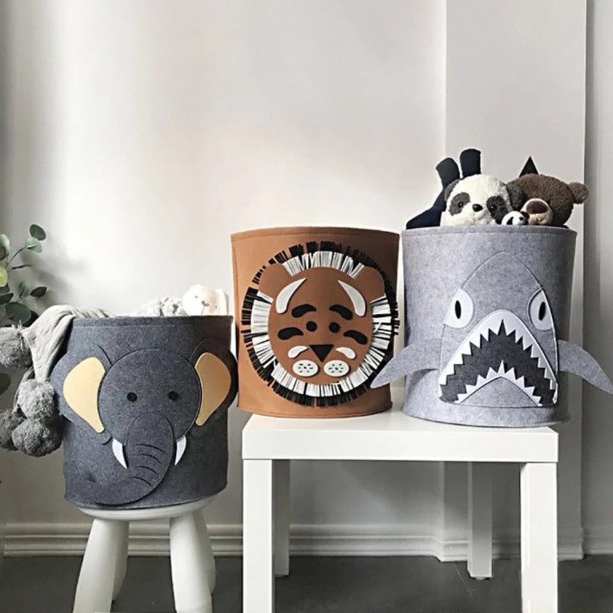
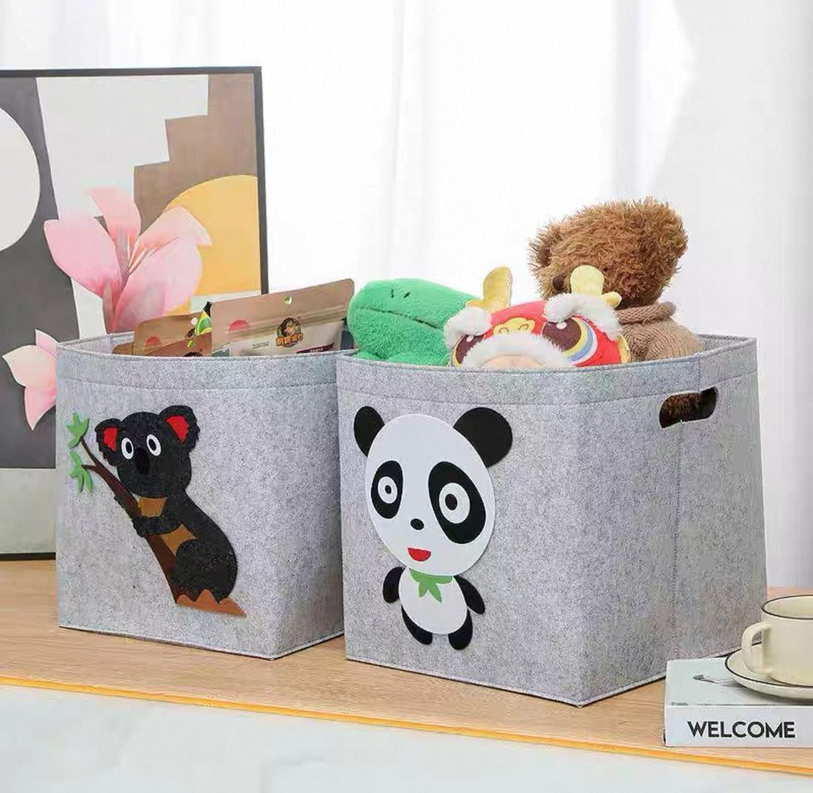

Easy toy storage ideas for Pakistani homes: open bins, baskets, rotation, shared rooms, safe toy boxes and routines that help children tidy up on their own.
Toys have a way of spreading through the house. Cars under the sofa, blocks in the kitchen, crayons in the drawing room just before guests arrive. In many Pakistani homes, children share a room with siblings, or play in the lounge where the family sits together. Good toy storage is not about hiding everything; it is about creating a system simple enough that children can tidy up themselves.
The most effective trick is rotation. Children often play better with fewer toys. Pick a small selection for the play area and store the rest in a cupboard or under the bed. Every week or two, swap some out. Old toys feel new again, and there is far less to tidy each evening. Rotation also makes it easier to notice broken toys or ones nobody plays with any more.

Children understand simple groups better than complicated systems. Use broad categories such as:
Use one container per category and add a picture label for children who cannot read yet. A photo of a car on the car box is clearer than a word.
Open bins, fabric baskets and low shelves are the easiest for children to use. They can see what is inside and put things back without help. Fabric storage bags are light enough for small children to carry and fold flat when not in use. Fun designs, such as animal shapes or a toy box shaped like a school bus, can make tidying feel like a game.
Toy boxes with heavy hinged lids can be dangerous. The American Academy of Pediatrics' guidance on toy box safety advises choosing boxes without lids or with lightweight removable lids, making sure any hinged lid stays open at any angle, and ensuring there are ventilation holes and no latches that can trap a child inside. Open baskets avoid these risks completely, which is one reason they are popular for younger children.

When siblings share a room, give each child a shelf, a basket or a colour so they know which toys are theirs. Shared toys can go in a central bin. Under-bed storage boxes are useful for toys that are not in rotation and for out-of-season clothes. Wall shelves keep books and display pieces off the floor, but secure them properly and keep heavy items low.
If children play in the family lounge, a single large basket or a storage stool can hold the day's toys and double as seating. At the end of the day, everything goes into the basket and the room is ready for evening tea or guests. A storage ottoman with a soft lid can also work, as long as the lid is light.
Crayons, colours, glue and paper are some of the messiest things in a home. Keep them in a caddy or box with compartments, and bring them out at the table rather than on the carpet. Store markers with caps on and check them regularly, throwing away dried-out ones. Keep scissors and small craft items out of reach of younger siblings.

Children learn by repetition. Choose a fixed time, such as before dinner or before bedtime, for a five-minute tidy. Play a song and see if everyone can finish before it ends. Praise effort rather than perfection. Over time, putting toys back becomes a habit rather than a battle.
A toddler needs big, open bins on the floor. A school-going child needs space for books, a desk for homework and boxes for collections such as stickers or cards. Choose plain, sturdy containers rather than ones covered in characters a child may outgrow in a year. Labels can be changed as interests change, and the same bins can later hold school projects, sports kit or stationery.
A few times a year, go through toys together. Broken toys can be fixed or thrown away, toys that are too young for your child can be passed to younger cousins, and good toys can be donated. Involving children teaches them to value what they have and to share.
A few versatile pieces cover most needs: a couple of fabric storage bags, a set of open bins, a low shelf and a basket for the lounge. If you are looking for options, Trenducts has toy and storage baskets that fold flat when not in use, and fun toys and games for the next birthday.
A tidy play area is not about a perfect room. It is about giving children a space where they can play freely and then put everything back without needing help.